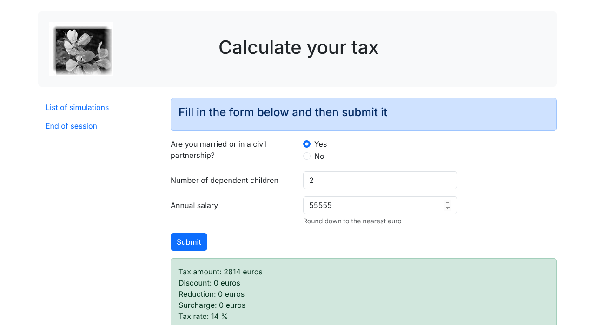

24. Ejercicio práctico – Versión 13
La versión 13 introduce pocos cambios: protege el acceso a los archivos de la aplicación. No agrega ninguna funcionalidad nueva: las acciones, las respuestas JSON, XML y HTML, y las vistas son las mismas que en la versión 12. Lo que cambia es la estructura de archivos en el disco y la configuración del servidor [Apache].
24.1. El problema
En el curso PHP 7, se podía solicitar la URL del archivo de configuración de la versión 12 y el navegador lo mostraba. Sin embargo, este archivo [config.json] contiene información sensible, como las credenciales de los usuarios autorizados a utilizar la aplicación. No debe ser accesible para los usuarios.
En nuestra versión 12, este archivo ya está protegido: se encuentra en la carpeta [Data], a la cual el archivo [.htaccess] —introducido con la versión 8— deniega el acceso (directiva [Require all denied]). Sin embargo, esta protección se aplica caso por caso: solo bloqueamos lo que hemos elegido bloquear específicamente, y todo lo demás se sirve. No obstante, todavía hay muchas cosas que no deberían mostrarse. Por ejemplo, el navegador puede solicitar una vista directamente, sin pasar por el controlador principal:
La vista se ejecuta fuera de contexto: las variables que normalmente proporciona la clase [HtmlResponse] no existen. Como [Laragon] está configurado para desarrollo (directiva [display_errors=On] de PHP), los mensajes de error se envían al navegador. Revelan las rutas de los archivos en el servidor, así como los nombres de las funciones y clases utilizadas, información que resulta útil para cualquiera que busque atacar la aplicación. Los controladores secundarios, las clases de respuesta y las clases de las capas [business] y [dao] también pueden ejecutarse mediante una simple URL. Aquí se limitan a definir una clase, pero no hay garantía de que siempre sea así.
Más grave aún: toda la carpeta [php8-oct-2026] del curso se encuentra dentro de la carpeta [www] de [Laragon]. Los archivos de los scripts de consola también son accesibles por la web, aunque nadie pensó en protegerlos:
Cualquiera puede leer el nombre de usuario y la contraseña del usuario de la base de datos [dbtaxes-2019]. Ahora bien, las versiones 8 a 12 del servidor utilizan este archivo o su equivalente.
El enfoque correcto es el opuesto: bloquear todo de forma predeterminada y luego permitir explícitamente solo lo que debe ser accesible desde el exterior. En nuestra aplicación, solo tres archivos deben ser accesibles:
- [main.php], el controlador principal, que recibe todas las solicitudes;
- [index.php], el punto de entrada de la aplicación HTML, que redirige a [main.php];
- la imagen [logo.jpg], que el navegador solicita mediante una solicitud HTTP cuando muestra el banner de las vistas.
24.2. La nueva estructura de directorios
Copiamos y pegamos la carpeta [scripts-web/tax/version-12] en [scripts-web/tax/version-13] y luego reorganizamos sus archivos:
- en [public], la única carpeta que será accesible por la web. Contiene los dos scripts [index.php, main.php] y, en la carpeta [Resources], la imagen [logo.jpg]. El nombre [public] es el que usan los frameworks PHP actuales (Symfony, Laravel) para este mismo papel;
- en [Config], los archivos de configuración: [config.json] (antes [Data/config.json]) y [database.json], la configuración de la base de datos que se tomó de la carpeta [Data] en la versión 8. El archivo [vhost-tax-v13.conf] se presentará al final del capítulo;
- en [Logs], el archivo de registro, que estaba en la carpeta [Data];
- y en [Model], las clases de las capas [business] y [dao] del servidor. Hasta ahora se cargaban desde las carpetas de las versiones 8 y 9. Ahora se copiaron en la carpeta de la versión 13, junto con los elementos [TaxException, TaxAdminData, Database] (versión 5) y las utilidades [Logger, SendAdminMail] (versión 9), [XmlUtilities] (versión 11) y [Utilities] (versión 5). Así, la carpeta [version-13] contiene toda la aplicación: es la única carpeta que se copiaría a un servidor de producción, sin depender de las carpetas de otras versiones;
- la carpeta [Tests] de la versión 12, que contenía las páginas de prueba de las vistas, no se incluye: de todos modos, esas páginas ya no serían accesibles por la web.
Los nombres de estos archivos no cambian, ni tampoco su contenido, salvo tres excepciones que veremos a continuación. Solo la biblioteca de Composer [vendor] permanece en su ubicación original, en la raíz de la carpeta [php8-oct-2026].
24.3. Cambios en el código
24.3.1. El archivo de configuración
El archivo [Config/config.json] queda así:
- línea 2: el archivo de configuración de la base de datos ahora está en la carpeta [Config] de la aplicación;
- Líneas 3–33: todos los archivos de la aplicación se encuentran en las carpetas de la versión 13. Las rutas son relativas a la carpeta raíz de la aplicación, la carpeta [version-13];
- línea 49: el archivo de registro está en la carpeta [Logs].
24.3.2. El controlador principal [public/main.php]
El controlador principal se movió a la carpeta [public]. Solo cambiaron dos líneas:
- Línea 18: la constante [ROOT_DIRECTORY] sigue designando la carpeta raíz de la aplicación, respecto de la cual se definen las rutas del archivo [config.json]. Como ahora el script está en la carpeta [public], esta carpeta raíz es la carpeta padre de [__DIR__]. No se puede escribir [dirname(__DIR__)]: el valor de una constante declarada con [const] debe ser una expresión constante, y una llamada a función no lo es. La concatenación de [__DIR__] (una constante) y una cadena sí es una expresión constante;
- línea 20: la nueva ruta del archivo de configuración;
- línea 23: esta línea no cambia: la ruta del cargador de Composer es relativa al directorio raíz de la aplicación, que siempre es [scripts-web/tax/version-13].
El script [public/index.php] es el de la versión 12. Su redirección a la URL de ruta relativa [main.php?action=init-session&type=html] sigue siendo correcta, ya que [index.php] y [main.php] están en la misma carpeta.
24.3.3. El banner de las vistas
Las vistas permanecen en la carpeta [Views], fuera de la carpeta [public]: la clase [HtmlResponse] las incluye con una ruta de disco ([__DIR__ . "/../Views/$view"]) y el navegador no las solicita. Solo cambia el fragmento [v-banner.php] , porque el logotipo se movió:
- Línea 9: la URL del logotipo es relativa a la URL de la página mostrada, que siempre es la del controlador principal, [.../version-13/public/main.php]. Por lo tanto, el navegador solicitará la URL [.../version-13/public/Resources/logo.jpg].
24.4. El archivo [.htaccess] de la aplicación
Con [Laragon], la raíz de documentos del servidor [Apache] (directiva [DocumentRoot]) es la carpeta [www]. Por lo tanto, todo lo que está dentro de [www] se puede acceder mediante una URL y, en particular, toda la carpeta [version-13]. Para restringir el acceso a todo lo que no esté en la carpeta [public], usamos un único archivo [.htaccess], ubicado en la raíz de la aplicación, dentro de la carpeta [version-13]. Tenga en cuenta que las directivas de un archivo [.htaccess] se aplican a la carpeta que lo contiene y a todas sus subcarpetas. [Laragon] configura [Apache] para que lea estos archivos (directiva [AllowOverride All]):
Comentarios
- Línea 5: cuando una URL especifica una carpeta que no tiene documento predeterminado ([index.php], [index.html]), [Apache] puede mostrar la lista de archivos de la carpeta. La directiva [Options -Indexes] lo impide;
- Línea 8: utilizamos el módulo [mod_rewrite] de [Apache], el módulo de reescritura de URL, que está habilitado de forma predeterminada en [Laragon]. Una regla [RewriteRule] tiene la forma [RewriteRule pattern substitution [options]]. En un archivo [.htaccess], el patrón (una expresión regular) se compara con la ruta de la URL solicitada, relativa al directorio del archivo [.htaccess]. Para la URL [http://localhost/php8-oct-2026/scripts-web/tax/version-13/Config/config.json], esta ruta es [Config/config.json];
- Líneas 11–12: la primera regla procesa la URL de la carpeta de la aplicación [.../version-13/], cuya ruta relativa está vacía (patrón: [^$]). Redirige al navegador (opción [R=302]) a la carpeta [public] y detiene el procesamiento de las reglas (opción [L], de “last”). La sustitución debe ser una ruta URL completa: se obtiene de la variable [REQUEST_URI] de [Apache], la ruta de la URL solicitada [/php8-oct-2026/scripts-web/tax/version-13/]. La condición [RewriteCond] que precede a la regla compara esta variable con la expresión regular [^(.*)/$]: la parte entre paréntesis (la ruta sin la barra final) queda entonces disponible en la regla con el nombre [%1]. De este modo, el archivo [.htaccess] no depende de la ubicación de la aplicación dentro de la carpeta [www];
- Línea 14: la segunda regla se aplica a cualquier URL cuya ruta relativa no comience con [public/] y no sea exactamente [public]: este es el significado del [!] colocado antes del patrón. La sustitución [-] significa “sin sustitución”, y la opción [F] (de “forbidden”) hace que [Apache] responda con el código [403 Forbidden]. La URL [.../version-13/public], sin la barra final, debe seguir permitida: [Apache] (módulo [mod_dir]) responde con una redirección a [.../version-13/public/].
Este archivo también bloquea el acceso a sí mismo: no se encuentra en la carpeta [public]. Como [Apache] normaliza la ruta de una URL antes de aplicar las reglas, una URL como [.../version-13/public/../Config/config.json]también se deniega.
El curso PHP 7 colocaba un archivo [.htaccess] con las dos líneas [order deny,allow] y [deny from all] en cada una de las carpetas que se querían proteger. Esa es la sintaxis de [Apache] 2.2. [Apache] 2.4 ahora solo la acepta mediante el módulo de compatibilidad [mod_access_compat], que está previsto eliminar. La sintaxis de [Apache] 2.4 es [Require all denied], que usamos desde la versión 8.
Si no se desea utilizar el módulo [mod_rewrite], una alternativa posible usa dos archivos [.htaccess] y la sintaxis [Require]:
- en la carpeta [version-13], un archivo llamado [.htaccess] que contiene únicamente la línea [Require all denied]: todo queda prohibido;
- en la carpeta [public], un archivo llamado [.htaccess] que contiene únicamente la línea [Require all granted]: los permisos de una subcarpeta prevalecen sobre los de la carpeta padre, y se permite todo el contenido de [public] .
Esta variante también funciona, pero entonces se deniega el acceso a la URL [.../version-13/] en lugar de redirigirla a la carpeta [public].
24.4.1. Pruebas con [curl]
Los archivos de la aplicación que están fuera de la carpeta [public] se rechazan:
El código [403 Forbidden] corresponde a la segunda regla. Observe que la vista [view-tax-calculation.php] ni siquiera se ejecutó. Los archivos de la carpeta [public] se sirven:
- líneas 1–11: el controlador principal responde normalmente: se inicia la sesión JSON;
- líneas 13–20: se sirve el logotipo (tipo [image/jpeg]).
Por último, la URL de la aplicación se redirige a la carpeta [public], cuyo script [index.php] a su vez redirige al controlador principal:
- Línea 4: la redirección de la primera regla del archivo [.htaccess];
- línea 11: la redirección del script [public/index.php].
En un navegador, la URL que inicia la aplicación HTML pasa a ser [http://localhost/php8-oct-2026/scripts-web/tax/version-13/]. Después de las dos redirecciones, aparece la página de autenticación con su logotipo:

La aplicación funciona igual que la de la versión 12. Esta es la pantalla de cálculo del impuesto después de una simulación:

Las URL que solicitan los clientes JSON y XML cambiaron: el controlador principal ahora es [.../version-13/public/main.php]. Para usar el cliente JSON de la versión 12 con el servidor de la versión 13, basta con cambiar la clave [urlServer] en su archivo de configuración.
24.5. En producción: la raíz de documentos es la carpeta [public]
El archivo [.htaccess] es una solución adaptada a [Laragon], donde una sola carpeta, [www], contiene varias aplicaciones. En un servidor de producción, el enfoque es diferente: la carpeta [public] se define como la raíz de documentos del sitio. El resto de la aplicación queda entonces fuera de la estructura de directorios del sitio web: ninguna URL puede acceder a él y no se necesitan reglas. Esta es la organización que recomiendan los frameworks PHP.
Con [Apache], se define un host virtual, es decir, para este fin, un sitio web adicional servido por el mismo servidor [Apache]. El archivo [Config/vhost-tax-v13.conf] ofrece un ejemplo:
- Línea 4: [Apache] también escucha en el puerto 8013. Un host virtual se puede distinguir de los demás por su puerto, como aquí, o por su nombre ([tax.test], por ejemplo). Usar el puerto evita tener que declarar un nuevo nombre de host;
- Líneas 5–14: la configuración del host virtual que responde a las solicitudes recibidas en el puerto 8013;
- línea 7: la raíz de documentos de este sitio es la carpeta [public] de la versión 13. Por lo tanto, la URL [http://localhost:8013/main.php] corresponde al archivo [public/main.php];
- Líneas 8–13: derechos de acceso a la carpeta [public]. [AllowOverride None] le indica a [Apache] que no necesita buscar archivos [.htaccess]: toda la configuración está aquí, lo que además es más rápido.
En [Laragon], coloque un archivo de este tipo (ajustando las rutas a la carpeta de instalación de [Laragon]) en la carpeta [<laragon>/etc/apache2/sites-enabled] y luego reinicie [Apache] desde la ventana de [Laragon] (haga clic en el botón [Stop] y luego en el botón [Start All] ). Entonces tendrá:
- líneas 1–6: la URL del sitio la sirve el script [public/index.php];
- líneas 8–9: el controlador principal responde normalmente;
- líneas 11–18: se sirve el logotipo;
- líneas 20–23: el archivo de configuración ya no se rechaza; simplemente no existe para el servidor web: la respuesta es [404 Not Found]. El archivo [.htaccess] de la carpeta [version-13] no se lee, ya que está fuera de la raíz de documentos.
En ambos casos, ya sea [Laragon] con el archivo [.htaccess] o un host virtual cuya raíz es la carpeta [public], el código de la aplicación es el mismo. Ese es el beneficio de la nueva estructura de directorios: el contenido público se reúne en una sola carpeta y todo lo demás queda protegido de forma predeterminada.